-
1937
Atanasoff-Berry Computer
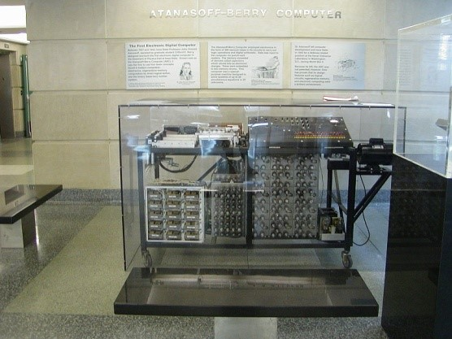-primul dispozitiv de calcul digital
1938
Z1 ~ proiectat de Konrad Zuse
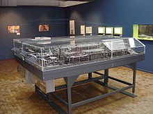 -
1941
Z3 ~ finalizat de Konrad Zuse
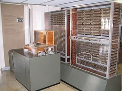-primul computer programabil
1944
Harvard Mark 1 ~ conceput de Howard H. Aiken și livrat la Harvard
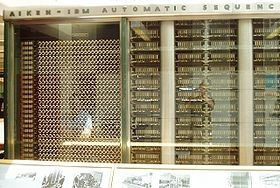Collosus Mark 1/2
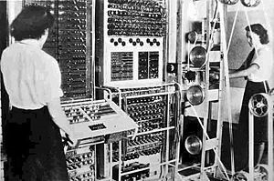1946
ENIAC
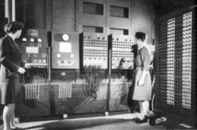1948
IBM Selective Sequence Electronic Calculator (SSEC)
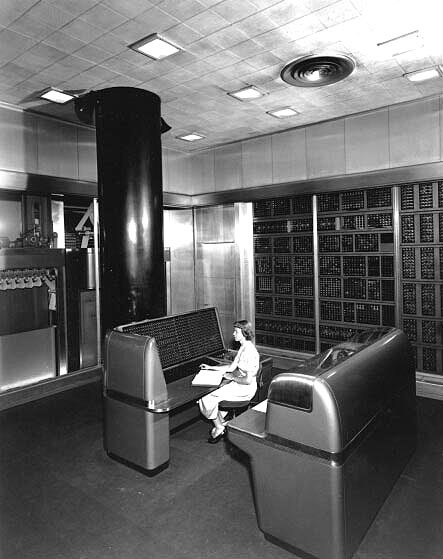Manchester Small-Scale Experimental Machine (SSEM)
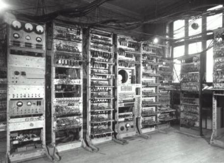1949
Manchester Mark 1
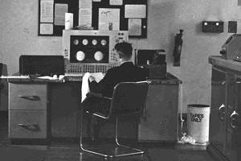 -
1951
Ferranti Mark 1
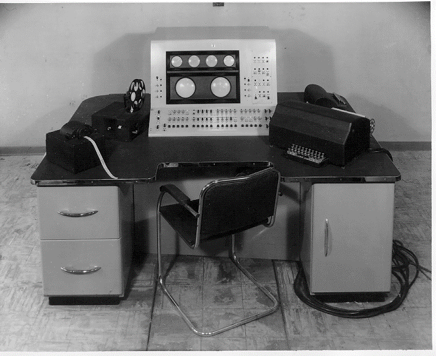-primul computer comercial
LEO 1 (Lyons Electronic Office 1)
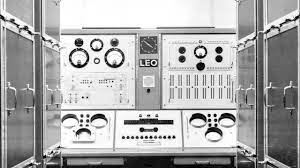-primul computer de afaceri
1952
IBM 701
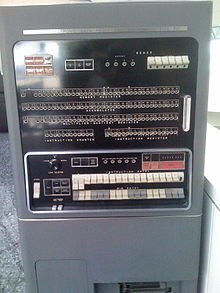-primul computer științific comercial al IBM
1954
IBM 650
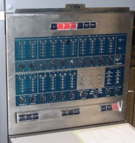-primul computer produs în masă din lume
IBM 704
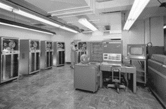1956
IBM 305 RAMAC
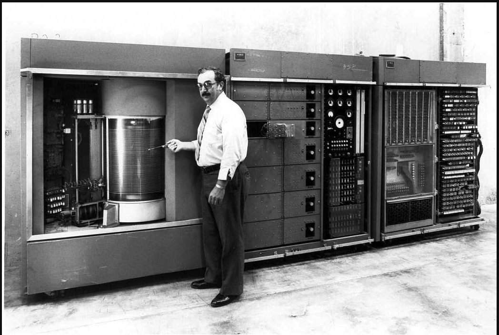-primul computer comercial care a folosit un hard disk cu cap mobil
1958
AN/FSQ-7
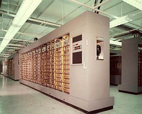-cele mai mari computere construite vreodată
-
1960
PDP-1
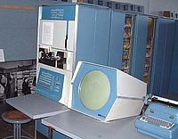-computerul cel mai important în crearea culturii hackerilor la MIT
-se putea juca primul joc din istorie pe un minicomputer
1962
LINC (Laboratory Instrumentation Computer) ~ proiectat de Wesley Clark
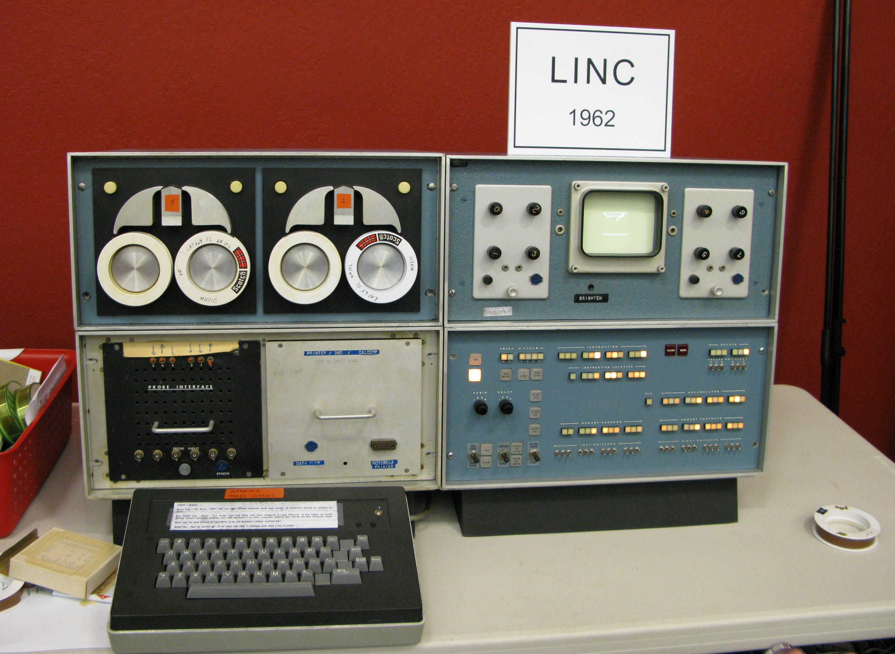-a oferit prima procesare a datelor de laborator în timp real
1964
DC 6600 - proiectat de Seymour Cray
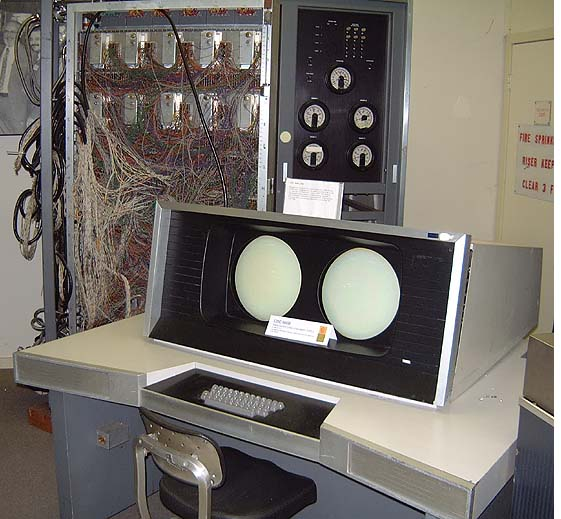-primul supercomputer
1965
PDP-8
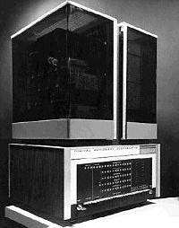-primul minicomputer de succes comercial
1966
ILLIAC IV
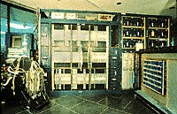HP-2115
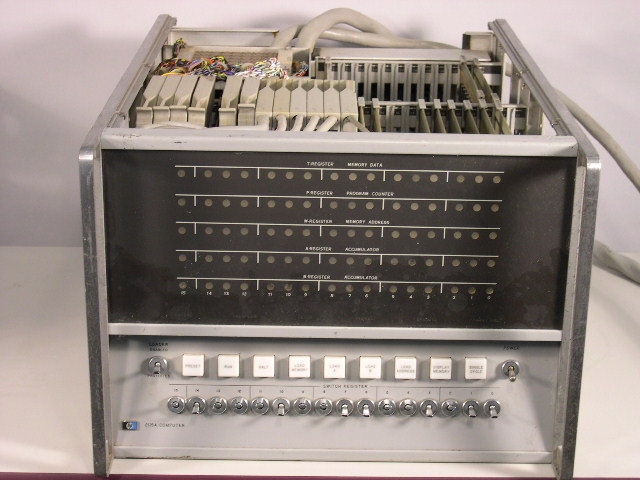 -
1971
Kenbak-1 ~ proiectat de John V. Blankenbaker
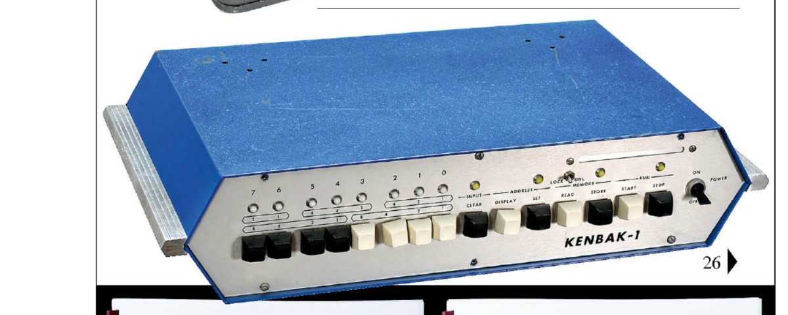-primul computer personal
1976
Apple 1 ~ proiectat de Steve Wozniak
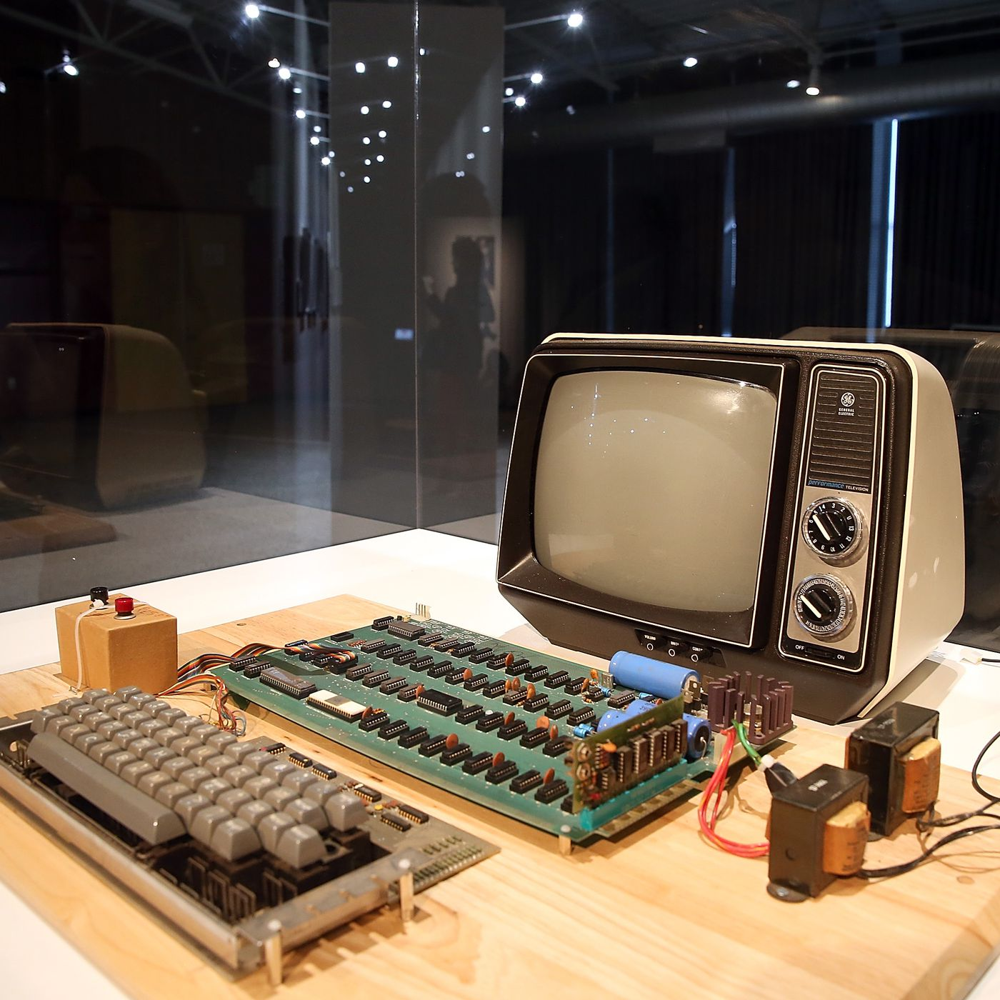Cray 1
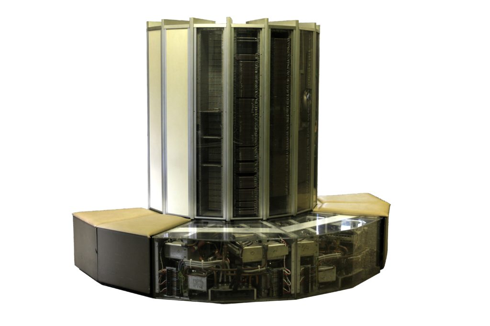1977
Commodore PET (Personal Electronic Transactor)
Apple II

-
1981
Osborne 1 ~ Adam Osburne

-primul computer portabil
1982
Commodore 64
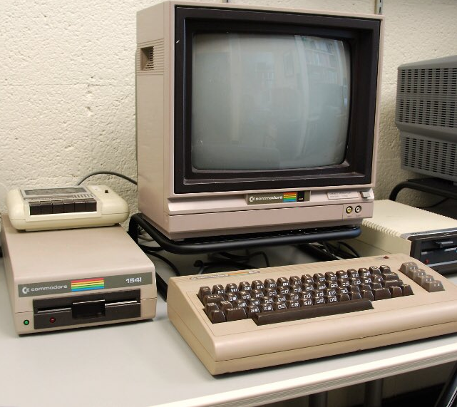1983
Lisa ~ Apple

-primul computer personal cu o interfață grafică pentru utilizator
1984
Macintosh-ul
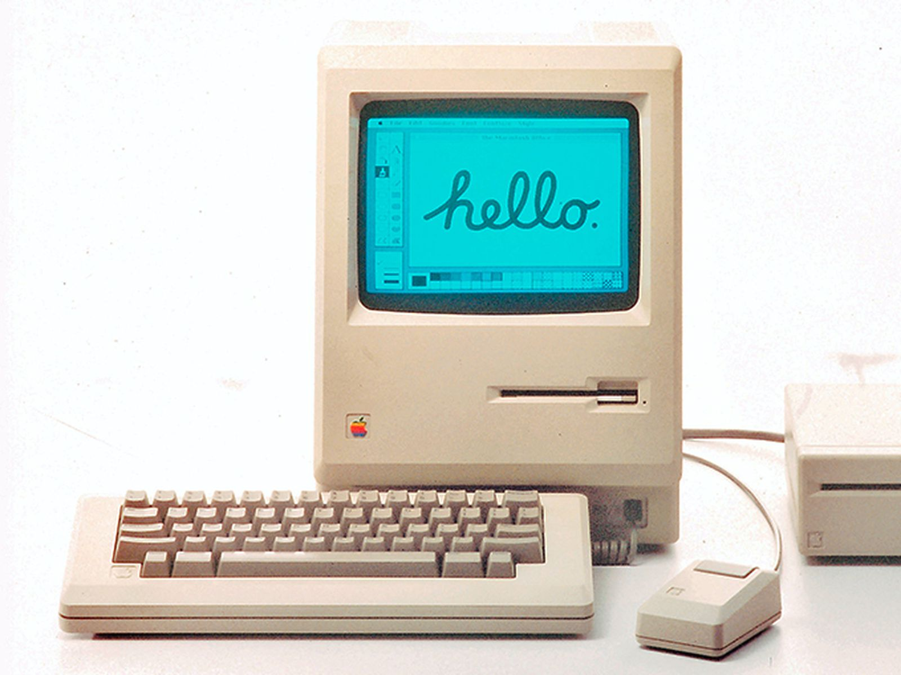-primul computer de succes condus de mouse cu o interfață grafică pentru utilizator
1985
Amiga 1000
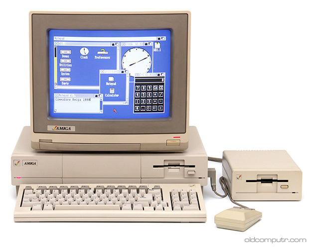1986
The Connection Machine
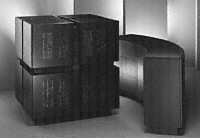1987
PS/2
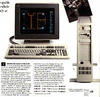 -
1990
Amiga 3000
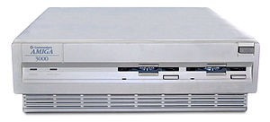1991
Amiga CDTV
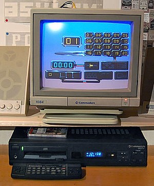Apple PC
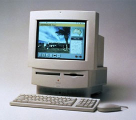1996
Libretto ~ Toshiba
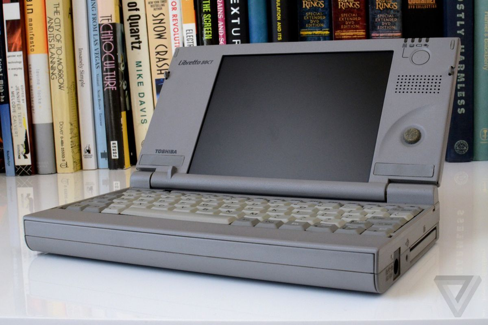1998
iMac-ul

1999
PowerMac G4
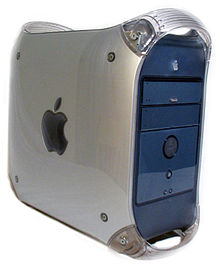 -
2002
Primul smartphone BlackBerry
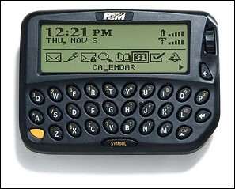2004
Librié EBR-1000EP
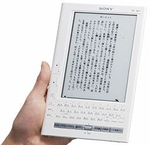2006
MacBook Pro
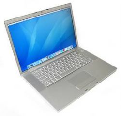2007
ASUS Eee PC
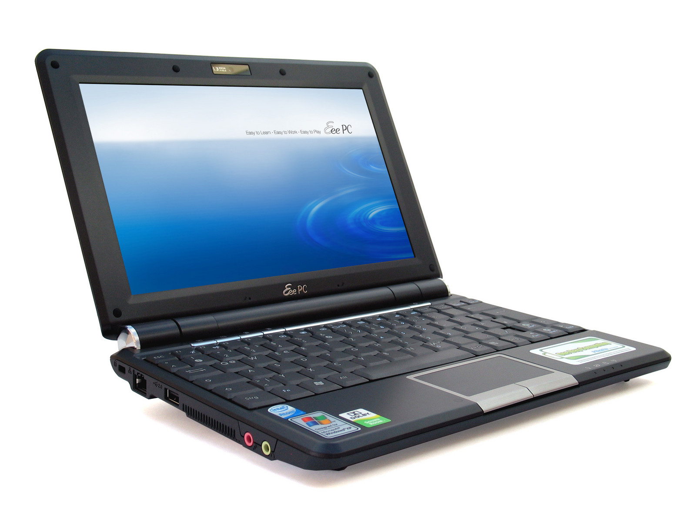2008
Prima versiune de Android
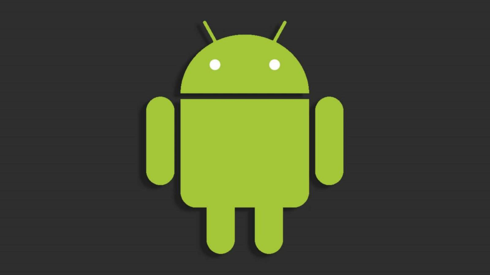2009
Windows 7
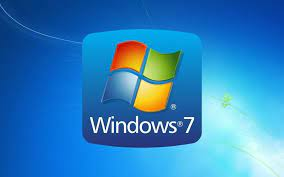 -
2010
iPhone 4
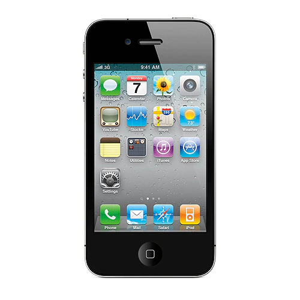2011
Watson
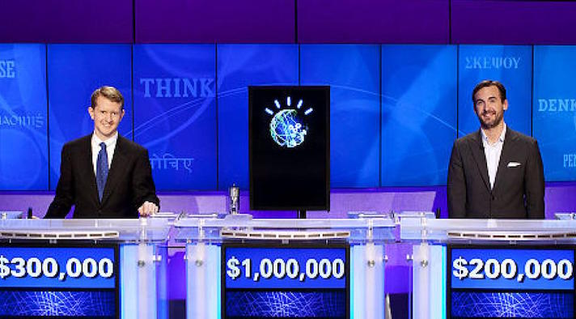-un super computer IBM îi învinge pe cei mai buni doi jucători umani Jeopardy într-un eveniment de trei zile